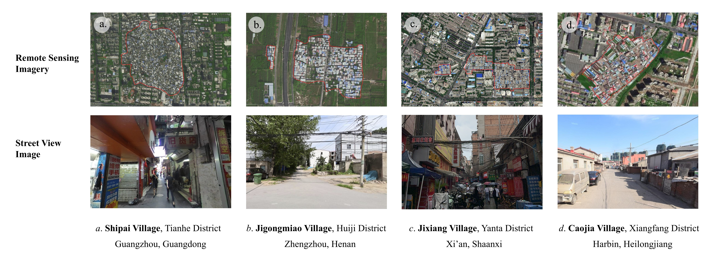
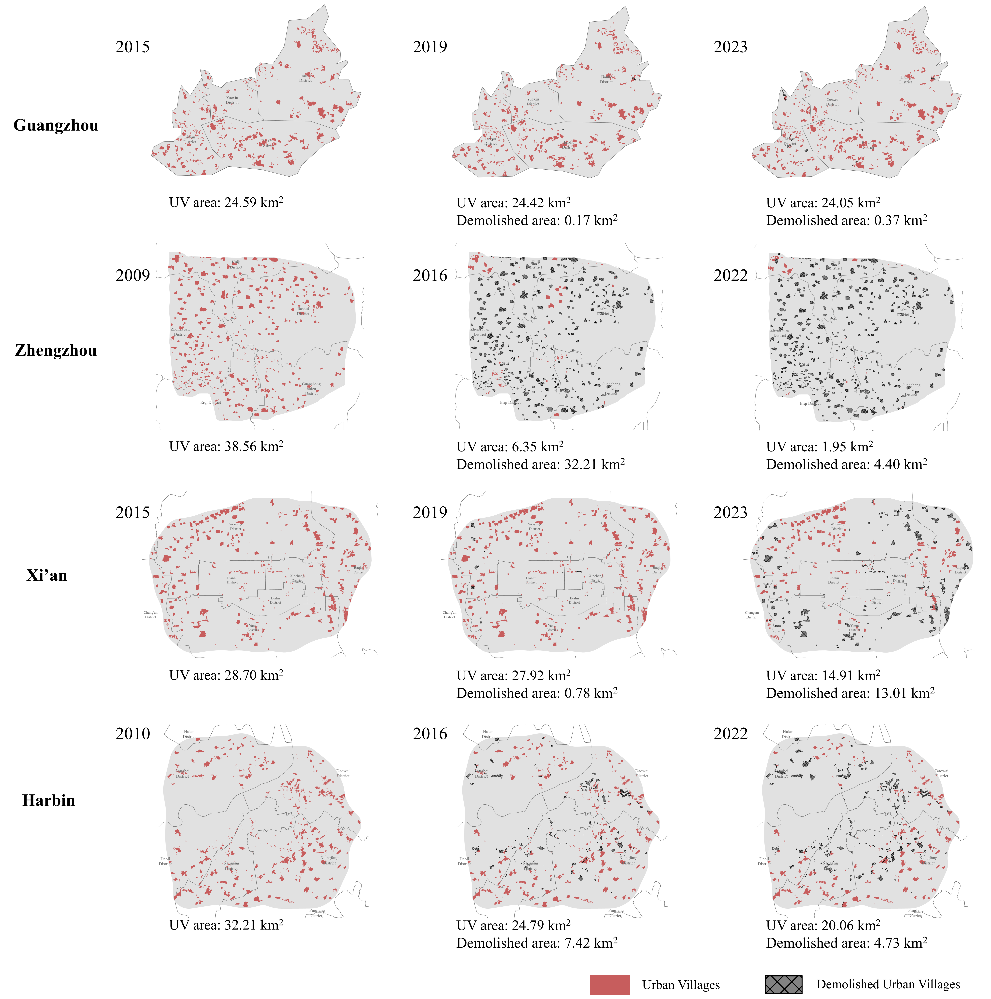
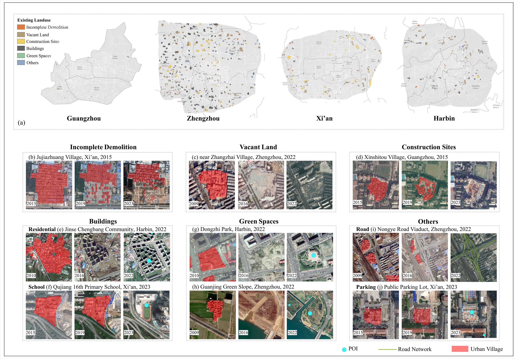
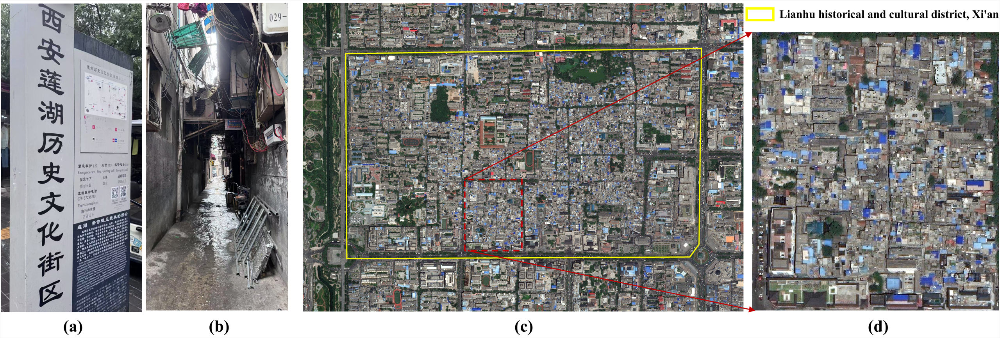
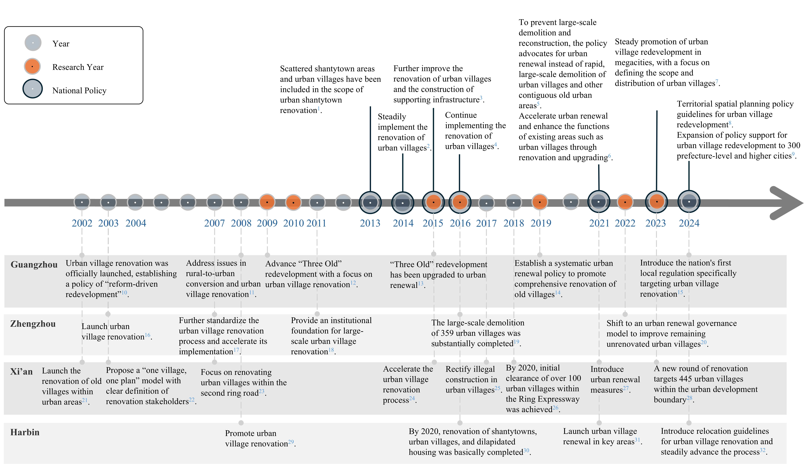
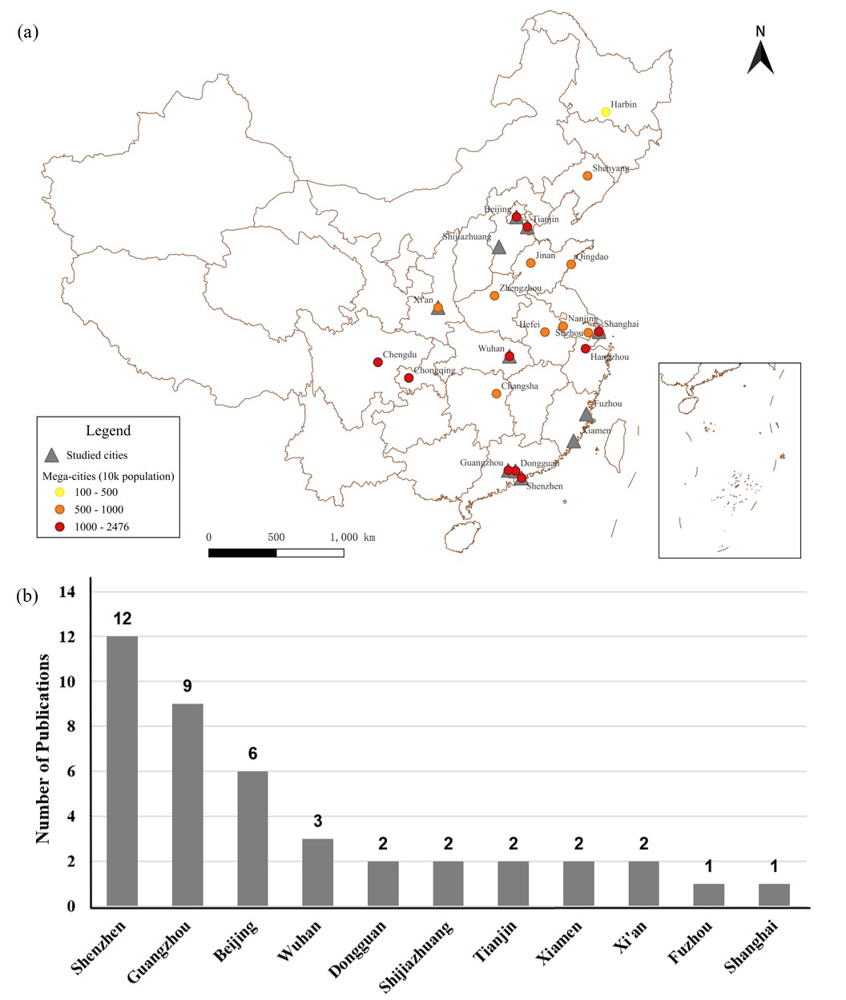
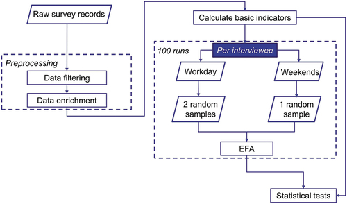

Doctor of Philosophy
Aug. 2024 – PresentTexas A&M University
College Station, USA
2024 – 2025
Research Assistant — GEOSAT Lab. Advisor: Dr. Xinyue Ye.
Hi, I'm Wenyu 👋
I am a PhD student working on GIS-based urban analysis, with a strong interest in using spatial data to understand how cities function through a human-centered and empathetic lens. My research applies geospatial analytical methods to key urban challenges, with a particular focus on informal settlements (slums) mapping, human mobility during disasters, and the interactions between people and the built environment.
Beyond academia, I enjoy travel and photography. I have visited ten countries across Asia, Oceania, North America, and Europe, and my next destination is Africa, where I hope to continue broadening my understanding of cities, cultures, and societies.
Texas A&M University
College Station, USA

National University of Singapore
Singapore

Central China Normal University
Wuhan, China








Urban villages (UVs), informal settlements embedded within China's urban fabric, have undergone widespread demolition and redevelopment in recent decades. However, there remains a lack of systematic evaluation of whether the demolished land has been effectively reused, raising concerns about the efficacy and sustainability of current redevelopment practices. To address the gap, this study proposes a deep learning-based framework to monitor the spatiotemporal changes of UVs in China. Specifically, semantic segmentation of multi-temporal remote sensing imagery is first used to map evolving UV boundaries, and then post-demolition land use is classified into six categories based on the "remained–demolished–redeveloped" phase: incomplete demolition, vacant land, construction sites, buildings, green spaces, and others. Four representative cities from China's four economic regions were selected as the study areas, i.e., Guangzhou (East), Zhengzhou (Central), Xi'an (West), and Harbin (Northeast). The results indicate: (1) UV redevelopment processes were frequently prolonged; (2) redevelopment transitions primarily occurred in peripheral areas, whereas urban cores remained relatively stable; and (3) three spatiotemporal transformation pathways, i.e., synchronized redevelopment, delayed redevelopment, and gradual optimization, were revealed. This study highlights the fragmented, complex and nonlinear nature of UV redevelopment, underscoring the need for tiered and context-sensitive planning strategies.

The shift toward high-quality urbanization has brought increased attention to the issue of "urban villages", which has become a prominent social problem in China. However, there is a lack of available geospatial data on urban villages, making it crucial to prioritize urban village mapping. In order to assess the current progress in urban village mapping and identify challenges and future directions, we have conducted a comprehensive review, which to the best of our knowledge is the first of its kind in this field. Our review begins by providing a clear context for urban villages and elaborating the method for literature review, then summarizes the study areas, data sources, and approaches used for urban village mapping in China. We also address the challenges and future directions for further research. Through thorough investigation, we find that current studies only cover very limited study areas and periods and lack sufficient investigation into the scalability, transferability, and interpretability of identification approaches due to the challenges in concept fuzziness and variances, spatial heterogeneity and variances of urban villages, and data availability.

Human mobility survey data usually suffer from a lack of resources for validation. Epidemiological survey records, which are released to the public as a containment measure by local authorities, provide place visitation details validated by the authority. This study collected and analyzed the epidemiological survey reports published by local governments in the Chinese mainland, between January 2020 and November 2021. To reveal the mobility patterns during the COVID-19 pandemic across the urban-rural gradient in China's mainland, we derived key mobility indicators from the epidemiological survey data from rural to megacities. We then applied exploratory factor analysis to identify latent factors that affected people's mobility. We found that the pandemic poses varying impacts across the urban-rural gradient in the Chinese mainland, and the mobility patterns of middle and small cities are more influenced. Our results also showed that the pandemic did not enlarge gender gap in people's mobility, as gender was not a significant driving factor for explaining people's quantity of out-of-home activities as well as extent of life space, while age group and city levels were significant.
URPN 325: GIS in Landscape & Urban Planning, Texas A&M University.
PLAN 625 & URPN 325: GIS in Landscape & Urban Planning, Texas A&M University.
Student Evaluations — Fall 2025 TAMU End-of-Term Survey
"She was genuinely so involved and dedicated to helping us. … she proactively reached out and helped me through my confusion with assignments."
"Very knowledgeable and open to helping."
"The Canvas was set up very well and everything was always very easy to access."
"Wenyu was such a great TA and was always willing to help us understand!"
Measuring the disappearance, redevelopment, and functional transformation of urban spaces — with a focus on urban villages in China — through high-resolution remote sensing, image segmentation, and spatial data integration. This includes advancing methods for annotating and interpreting complex urban targets in remotely sensed imagery, supporting scalable geospatial intelligence pipelines for urban governance and planning applications.
Related: [4] [6] [7] · Under Review: Geospatial data for urban villages
Developing knowledge-aware and graph-based retrieval systems for urban digital twins, enabling constraint-aware spatial reasoning, interpretable decision support, and natural-language querying of geographic entities.
Related: [5] [10]
Understanding how heat exposure and hazard contexts reshape urban behavior and mobility patterns, using GeoAI to assess where and how adaptation emerges spatially across different urban environments.
Related: Working paper (Shops, Shelters, and Survival)
Graduate Student Affinity Group Research and Support Award $250
American Association of Geographers (AAG) · Winner (5/150)
International Geographic Information Funds Scholarship Award $1,200
American Association of Geographers (AAG)
Jeanne X. Kasperson Student Paper Competition $220
American Association of Geographers (AAG)
Howard Balanoff Scholarship $1,000
Texas A&M University
College of Architecture Travel Grant $600
Texas A&M University (2025 & 2026)
CISG Robert Raskin Student Paper Competition — Finalist
American Association of Geographers (AAG)
First Prize, "TRMSG·ISA Cup" Geography Teaching and Mapping Competition
National · China
Grand Prize, National University GIS Application Skills Competition
National · China
Second Prize, China University Computer Design Competition (Web Application)
National · China
Winning Prize, ESRI Cup GIS Software Development Competition
National · China
Symposium on Human Dynamics Research, AAG 2026, San Francisco.
Mapping Informal Settlements: Geospatial Intelligence for Equitable Urban Transformation, AAG 2026.
Shrinking Cities: Effects, Spatial Challenges, and Response Strategies, AAG 2025, Detroit.
Academic institution Conference
For research collaborations, conference invitations, and academic opportunities, please reach out by email.